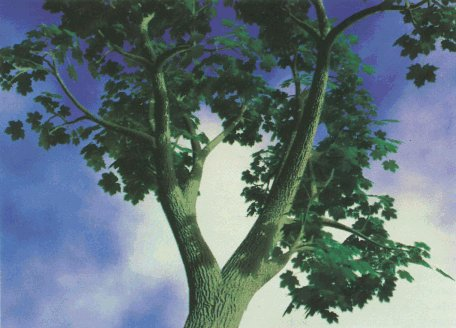

Gymnasium des Instituts Sacré Coeur Pressbaum
Rekursive Strukturen
Fraktale Wachstumsmodelle von Pflanzen

Fachbereichsarbeit aus Mathematik
unter der Betreuung von
Dr. Hildegard Urban-Woldron
Klasse: 8B
2000/2001